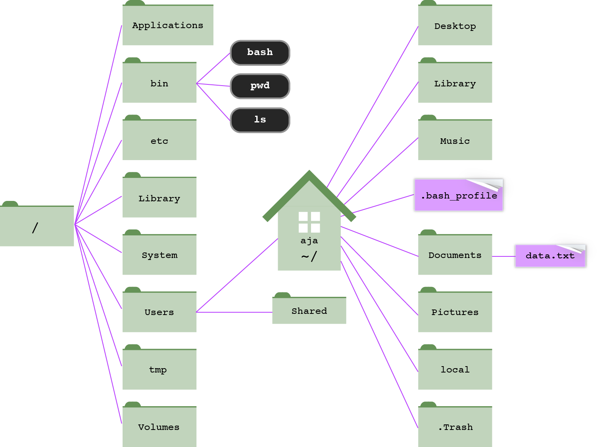

Chapter 1 Introduction to Unix
In this chapter
- why biologists work at the command line, and how to choose an operating system
- how the Unix file system is organized, and how to move around in it
- the core commands for viewing, finding, copying, moving, and deleting files
- how to save, combine, and chain command output with redirection and pipes
- how to slice and summarize data files with
grep,cut,sort,uniq,awk, andsed - how to automate repetitive work with Bash scripts and loops
1.1 Why the command line?
Why not just point and click with a Graphical User Interface (GUI)? GUIs are fine for many things, but they fall short for scientific computing:
- They’re not good for long sequences of operations that need to be repeated on multiple datasets.
- They keep no log of what you did and which commands you ran.
- They’re not conducive to running jobs remotely on a computing cluster.
- They’re labor-intensive to develop and are generally restricted to a single operating system, so the software you need often doesn’t have one.
Use the command line instead. It is extremely powerful, not a primitive interface. Learning it takes an up-front investment, but the long-term payoff is enormous:
- It’s an absolute necessity for the big datasets that characterize modern biology.
- You can automate tasks.
- You can do, and re-do, and re-do analyses with minimal added effort.
- It’s easy to record exactly what you did, which minimizes mistakes and makes your work repeatable and easier to troubleshoot.
1.2 Choosing an operating system
1.2.1 macOS
Pros
- Unix is fully and naturally integrated into the operating system.
- You can still use Microsoft Office, Adobe, and so on.
- It’s the easiest transition to make, and the choice of many data scientists.
- It can run most Linux-based software.
Cons
- The hardware is expensive, and the operating system is proprietary.
- Python no longer comes pre-installed (Apple removed it in 2022), but it’s easy to install with conda or Homebrew.
- Some bioinformatics programs aren’t yet built for the ARM chips (M1, M2, …) in newer Macs. They usually still run through Apple’s Rosetta translation layer, or in a container.
- macOS uses the BSD versions of many Unix commands, which occasionally behave
a little differently from the GNU versions on Linux. This book points out the
differences that matter (for example,
sed -iin Section 1.14).
1.2.2 Linux
Pros
- You can install it as the operating system on any PC. A Linux box is a fraction of the price of a comparably outfitted Mac.
- It’s compatible with all the important bioinformatics software.
- People will think you’re smart; you can snub Mac users.
- It’s open source.
Cons
- It’s open source.
- You’ve probably never used it, so the learning curve is steeper.
- Maintaining a Linux box requires some time investment.
An aside: Unix vs. Linux. Unix is a family of operating systems that dates back to Bell Labs in the 1970s; macOS is a certified Unix. Linux (“Linus’ Unix,” after its creator Linus Torvalds) is a free, open-source, Unix-like operating system. For the purposes of this course, the commands are nearly identical. The two differ mostly in how they’re developed:
| Unix | Linux |
|---|---|
| proprietary | open source |
| targeted development | diverse development |
| more consistency between versions | less consistency between versions |
| development restrictions | no restrictions |
| patches are highly tested | not as much beta testing |
| more slowly evolving | huge open-source community identifies and fixes problems quickly |
1.2.3 Windows
Pros
- None.
Cons
- Too many to name.
- Windows is not designed for programming and bioinformatics applications.
But there are workarounds for running Linux alongside Windows:
- Windows Subsystem for Linux (WSL2) runs a real Linux system inside Windows. This is the easiest option for most people (installation guide).
- VMware runs Linux in a virtual machine (instructions).
- Log into a remote Linux computer, such as the university’s computing
cluster (Chapter 4). Windows 10 and 11 include an
sshcommand that you can run in PowerShell or Windows Terminal. PuTTY is an older alternative. - Boot Linux from a flash drive (e.g., with UNetbootin). You have to restart your computer to switch operating systems.
1.3 The shell
You interact with Unix through a shell, which is:
- an intermediary between you and the inner workings of the operating system;
- a command interpreter, providing an interface to programs and utilities;
- a programming language, letting you combine utilities in different ways to get things done.
A shell can be used interactively, accepting commands you type on the keyboard, or non-interactively, reading commands from a file (a script). It can:
- run builtin commands that are implemented inside the shell itself, such
as
cd,pwd, andexit; - run programs installed elsewhere on the file system, such as the
GNU Core Utilities (
ls,mv,rm,mkdir,chmod, …). Section 2.1 explains how the shell finds them.
There are many different shells. We’ll use Bash or Zsh, which has been the default shell on macOS since 2019. For everything in this course, the two behave the same way. The shell runs inside a text window: on a Mac, that’s the Terminal application.
- Launch Terminal: Finder > Go > Utilities > Terminal.
- Add Terminal to your Dock by dragging and dropping it there. You’ll be using it a lot.
When the shell is ready for a command, it shows a prompt, often ending in
$ or %. Type a command and press Return. Start with these:
whoami # what's my user name?
echo $SHELL # which shell am I using?
echo $HOME # where's my home directory?aja
/bin/zsh
/Users/ajaAnything after a # is a comment; the shell ignores it. This book uses
comments to explain what commands do.
1.4 The file system
Your computer’s files are organized like a filing cabinet: drawers (folders)
hold files and other folders. In Unix, folders are called directories, and
they’re organized into a tree that starts at a single root directory,
written as a forward slash: /.

Figure 1.1: Part of the directory structure on a Mac. Everything branches from the root directory (/). The user aja’s home directory (~) is inside /Users. Modified from Haddock & Dunn, Practical Computing for Biologists (2011).
Every user has a home directory where their own files live. On a Mac, it’s
/Users/username. The shell uses ~ as shorthand for your home directory.
Reading. File not found by Monica Chin (The Verge), on why a generation raised on search bars has never needed to think about directories, and why that’s a problem for scientists.
1.4.1 Paths
A path is a written description of a location in the file system. Both
directories and files have paths. A path is a series of directory names
separated by forward slashes (/).
An absolute path gives the complete, unambiguous location of a file, starting from the root. It always starts with a forward slash:
/Users/aja/Desktop/files/data/watermelon_genome/watermelon.fsaThe working directory is where you are right now.
A relative path describes where a file or directory is relative to some other directory, usually the working directory. If you’re in
~/Desktop, the relative path towatermelon.fsais:files/data/watermelon_genome/watermelon.fsa
A few special names help you write paths:
| Name | Meaning |
|---|---|
/ |
the root directory (at the start of a path) |
~ |
your home directory |
. |
the current (working) directory |
.. |
the parent directory, one level up |
Mac shortcut. You can enter a long path to a file by dragging the file from
the Finder and dropping it into the Terminal window. Try it with
files/file_types/Don't do this.txt.
New rule: no spaces in file names. Look at what happened when you dragged
Don't do this.txt into the Terminal: the shell needs backslashes to “escape”
the spaces and the apostrophe, because spaces separate the parts of a command.
Spaces (and other special characters, like parentheses and apostrophes) in
file names cause endless trouble at the command line. Instead, use:
- underscores or dashes:
my_file.txt,my-file.txt - mixed upper and lowercase:
myFile.txt - dots:
my.file.txt
1.4.2 The course files
Download files.tgz from the class GitHub page and move it to your Desktop.
A .tgz file is a compressed archive (a “tarball”), similar to a .zip file.
Double-click it in the Finder, or extract it at the command line (Section
4.4.3 explains how this works):
This creates a files directory. We’ll work mostly with the data in
files/data:
covid_genome
cowboy_carter.md5sum
cowboy_carter.txt
fruit.txt
letters.txt
presidents.csv
shaver_etal.csv
watermelon_genomeThe examples in this book assume you’ve extracted files.tgz on your
Desktop. If you put it somewhere else, adjust the paths accordingly.
Exercise 1.1 Using the directory tree in Figure 1.1 and the layout of the course files:
- Write the absolute path to
fruit.txt(infiles/data) on your computer. - Write the relative path to
fruit.txtfrom your home directory. - You’re in
files/data/watermelon_genome/nt. Write the relative path tofruit.txtusing... - Write the path to the
bindirectory that holdslsandpwdin the figure. Is it absolute or relative?
1.5 Getting around
1.5.1 pwd, cd, and echo
pwd prints the path of the working directory. Is it an absolute
or a relative path?
cd changes directory:
cd ~/Desktop/files/data/watermelon_genome # relative to home (~)
cd /Users/aja/Desktop/files/data/watermelon_genome # absolute path
cd .. # move up one directory
cd ../.. # move up two directories
cd # go home
cd ~ # also go home
cd - # go back to the previous directoryecho writes its arguments to the screen (more precisely, to standard
output, Section 1.7):
crazy
crazy horse1.5.2 clear and exit
clear clears the Terminal screen. exit ends your shell session.
Exit before you quit. Always exit your session before closing the
Terminal window. Not doing so is like unplugging your computer: an
unceremonious end to all your programs and processes.
Awesome shortcuts.
- Tab: auto-complete file and command names. Use it constantly; it saves typing and prevents typos. Press it twice to see all the possible completions.
- ↑ and ↓: scroll through and re-run previous commands.
- Ctrl+r: search for an old command.
history: list your previous commands.open .(Mac only): open the working directory in the Finder.
More shortcuts.
- Ctrl+a: go to the beginning of the command.
- Ctrl+e: go to the end of the command.
- Ctrl+u: erase from the cursor to the start of the command.
- Ctrl+l: clear the screen (same as
clear).
1.5.3 Stopping a command: Ctrl+C
Sooner or later, you’ll start a command that won’t stop: it’s printing an entire genome to the screen, it’s taking far longer than expected, or it’s just sitting there with no prompt. Don’t close the Terminal window. Instead:
| Keys | What it does |
|---|---|
| Ctrl+C | cancel (interrupt) the running command and get your prompt back |
| Ctrl+D | signal “end of input” to a command that’s waiting for you to type |
| q | quit programs like less and man that take over the whole screen |
A command with no prompt is often waiting for input. If you forget to give
cat or grep a file name, for example, it waits for you to type the input
on the keyboard (that’s STDIN, Section 1.7).
Exercise 1.2
- Type
catwith no file name and press Return. Type a few words and press Return. What happens? Press Ctrl+D. - Run
catagain, and this time get out with Ctrl+C. - Run
yes, a command that printsyforever. Stop it.
1.5.4 ls: listing directory contents
ls lists the contents of a directory. With no arguments, it lists the
working directory. Otherwise, give it the path to a directory or file:
ls # contents of the working directory
ls ~/Desktop # contents of the Desktop
ls ~/Desktop/files/data/watermelon_genome
ls ~/Desktop/files/data/watermelon_genome/watermelon.fsaFrom here on, most examples are run from inside the watermelon_genome
directory:
aa
mt_genomes
nt
watermelon.fsa
watermelon.gbf
watermelon.gffMost Unix commands take options (also called flags or arguments) that
modify their behavior. Options start with a dash. Useful options for ls:
| Option | Effect |
|---|---|
-a |
list all contents, including hidden files |
-l |
long format |
-h |
human-readable file sizes (with -l) |
-t |
sort by time modified, most recent first |
-S |
sort by file Size, largest first |
Single-letter options can be given separately or combined. These are all the same command:
Add more options to sort by size and show human-readable sizes:
total 2000
-rw------- 1 aja staff 609K Jan 4 2019 watermelon.gbf
-rw------- 1 aja staff 371K Aug 21 2023 watermelon.fsa
-rw------- 1 aja staff 16K Jan 4 2019 watermelon.gff
drwxr-xr-x 62 aja staff 1.9K Nov 2 18:15 nt
drwxr-xr-x 41 aja staff 1.3K Nov 2 18:15 aa
drwxr-xr-x 25 aja staff 800B Nov 2 18:15 mt_genomes
drwxr-xr-x 10 aja staff 320B Nov 2 18:15 ..
drwxr-xr-x 8 aja staff 256B Nov 2 18:15 .Files whose names start with a dot (like .DS_Store) are hidden files;
plain ls doesn’t show them. . and .. are the current and parent
directories.
1.5.5 Reading ls -l output
Each line of a long listing describes one file or directory:
-rw------- 1 aja staff 371K Aug 21 2023 watermelon.fsa| Field | Meaning |
|---|---|
- |
file type: - for a file, d for a directory, l for a link |
rw------- |
permissions for the user, group, and others (Section 1.15.3) |
1 |
number of links (for directories, roughly how many items inside) |
aja |
the file’s owner |
staff |
the owner’s user group |
371K |
file size |
Aug 21 2023 |
date and time last modified |
watermelon.fsa |
file name |
1.5.6 Wildcards
A wildcard stands in for other characters in a file name. The most
important one is *, the wildest of all wildcards: it matches any number of
any characters (except a slash).
watermelon.gff
nt/cox1.fasta
nt/cox2.fasta
nt/cox3.fasta-rw------- 2 aja staff 350 Jan 4 2019 aa/nad1.fasta
-rw------- 2 aja staff 995 Jan 4 2019 nt/nad1.fastaTwo less common wildcards are sometimes handy: ? matches exactly one
character, and [...] matches any one of the characters inside the brackets.
nt/atp1.fasta
nt/atp4.fasta
nt/atp6.fasta
nt/atp8.fasta
nt/atp9.fasta
nt/cox1.fasta
nt/cox3.fastaExercise 1.3 From inside watermelon_genome:
- Show a long listing of all the atp genes in the
aadirectory. - How would you show the file sizes of those genes in bytes? In kilobytes?
- List all the ribosomal protein genes (rps and rpl) in
nt. - List all the genomes in
mt_genomesthat contain a “u” in the file name. - Based on file size, which is the largest genome in
mt_genomes? - Which file in
watermelon_genomewas modified most recently?
1.5.7 Finding files: find
ls shows you what’s in one directory. find searches a directory and
everything below it. Its structure is find where tests:
| Test | Finds |
|---|---|
-name 'pattern' |
names matching a pattern (wildcards allowed) |
-iname 'pattern' |
the same, but ignoring upper/lowercase |
-type f |
files only |
-type d |
directories only |
-size +500k |
files bigger than 500 kilobytes (M for megabytes) |
-mtime -7 |
files modified in the last 7 days |
./presidents.csv
./shaver_etal.csv.
./watermelon_genome
./watermelon_genome/nt
./watermelon_genome/mt_genomes
./watermelon_genome/aa
./covid_genomewatermelon_genome/nt/nad1.fasta
watermelon_genome/aa/nad1.fasta./watermelon_genome/mt_genomes/vitis_vinifera.fasta
./watermelon_genome/mt_genomes/cucurbita_pepo.fastaPut the pattern in quotes. Without them, the shell expands the wildcard
before find sees it (Section 1.12).
Exercise 1.4 Starting from the files directory:
- Find every FASTA file (ending in
.fasta) anywhere belowfiles. How many are there? (Hint: you’ll be able to count them easily after Section 1.11. For now, just look.) - Find all the Python scripts (
.py). - Find all the files larger than 1 megabyte.
1.6 Looking at files
1.6.1 cat
cat concatenates files and prints them to the screen. Give it one file
to view it, or several to print them one after another:
>Citrullus_atp9
ATGTTAGAAGGTGCAAAATCAATGGGTGCCGGAGCTGCTACAATTGCTTCAGCGGGAGCTGCTGTCGGTATTGGAAACGTCTTCAGTTCTTTGATCCATTCCGTGGCGCGAAATCCATCATTGGCTAAACAATCATTTGGTTATGCCATTTTGGGCTTTGCTCTAACCGAAGCTATTGCATTGTTTGCTCCAATGATGGCCTTTTTGATCTCATTCGTATTCCGAExercise 1.5 A colleague asks you to send her a single file with all the watermelon nad gene sequences, both amino acid and nucleotide. How would you do it? How long would it take for one species? 5 species? 100 species? 1,000 species?
1.6.2 head and tail
head shows the first 10 lines of a file and tail shows the last 10. Both
are good for peeking at large files. Use -n to choose how many lines:
Citrullus lanatus GenBank CDS 1 726 726 + . Gene cox1 exon 1 ; COLOR blue ; type exon
Citrullus lanatus GenBank intron 727 1693 967 + . Gene cox1 ; COLOR green ; type intron
Citrullus lanatus GenBank CDS 1694 2551 858 + . Gene cox1 exon 2 ; COLOR blue ; type exon1.6.3 less
less lets you page through a file of any size without printing the whole
thing to the screen. It has more features than its predecessor more
(because less is more).
Inside less:
| Key | Action |
|---|---|
| Space, ↑, ↓ | move through the file |
/search-term |
search for search-term |
| n / N | next / previous match |
| g / G | go to the top / bottom of the file |
| q | quit |
less has lots of options. Three good ones:
| Option | Effect |
|---|---|
-i |
ignore case when searching |
-S |
do not wrap (fold) long lines |
-N |
show line numbers |
Exercise 1.6 Open watermelon.gff with less -iSN.
- Jump to the bottom of the file. How many lines does it have?
- Search for
trnM. How many hits are there? - Use the arrow keys to scroll right and see the end of the long lines.
1.6.4 Getting help: man
There are two main ways to find help. The first is the manual pages, which describe a program’s usage and all its options:
You navigate and search a man page just like a file in less; press
q to exit. Man pages are usually straightforward, but not always.
The second way is to search the web, which is often faster.
Getting help from AI assistants. Chatbots such as ChatGPT, Claude, and Copilot are good at explaining what an unfamiliar command does and at suggesting commands for a task. Use them, but:
- Ask for an explanation of every part of a command you don’t understand, and check it against the man page.
- Test suggested commands on copies of your data (in
/tmp, for example) before running them on the real thing. Be especially careful with anything that usesrm,mv,>,sed -i, or a loop over many files. - You’re responsible for what you run, not the chatbot.
Exercise 1.7 Use man ls to find the options that:
- list one file per line;
- reverse the order of the listing.
Then list watermelon_genome/nt, one file per line, in reverse alphabetical
order.
1.7 Data streams and redirection
Every Unix command has three standard data streams:
| Number | Name | What it is |
|---|---|---|
| 0 | standard input (STDIN) | input to a command: what you type, or a file redirected in with < |
| 1 | standard output (STDOUT) | the results the command prints to your screen |
| 2 | standard error (STDERR) | error messages the command prints to your screen |
By default, both STDOUT and STDERR go to the screen. What if we want to save them?
1.7.1 Redirecting STDOUT
Use > to send STDOUT to a file instead of the screen:
Use >> to append to the end of an existing file:
> overwrites. If you redirect with a single > to a file that already
exists, the shell completely overwrites it, without warning.
End files with a newline. Before combining lots of files with cat, make
sure each file ends with a newline character. Otherwise, the first line of one
file will be glued onto the last line of the file before it.
Exercise 1.8
- Write all the nad nucleotide sequences to a file.
- Now write all the nad amino acid sequences to the same file, without overwriting the nucleotide sequences.
- Create a single file,
~/Desktop/watermelon_data.fasta, with the following data, in this order:- the watermelon genome (
mt_genomes/citrullus_lanatus.fasta) - all the watermelon nucleotide sequences
- all the watermelon amino acid sequences
- the watermelon genome (
1.7.2 Redirecting STDERR
STDERR is data stream number 2, so use 2> to send it to a file. Here, one
file exists and the other doesn’t, so we get both STDOUT and STDERR:
ls: nada.txt: No such file or directory
-rw------- 1 aja staff 379432 Aug 21 2023 watermelon.fsals -l watermelon.fsa nada.txt > listing.txt 2> err.txt # STDOUT and STDERR to separate files
ls -l watermelon.fsa nada.txt 2> err.txt # STDOUT to the screen, STDERR to a file
ls -l watermelon.fsa nada.txt 2>> err.txt # append STDERR to a fileSometimes you want to throw output away entirely. /dev/null is a “black
hole”: anything redirected there disappears.
ls: nada.txt: No such file or directoryThis is handy for programs that print huge amounts of output you don’t need, while you save their error messages to a log file.
Exercise 1.9
- With a single command, create a file named
atp.fain your home directory containing, in order, the watermelon atp nucleotide sequences and then the atp amino acid sequences. - Run
ls -l watermelon.fsa nada.txtagain, this time sending STDOUT to/dev/nulland STDERR to a file namederrors.log. What’s on the screen? What’s inerrors.log?
1.8 Text files and text editors
1.8.1 Plain text
Programs and data for this course are plain text files. No Microsoft Office documents. Compare a GFF file saved as plain text with the same content saved as a Word document:
The file command tells you what kind of file you have:
Don't do this.txt: ASCII text
watermelon_genes.mac.txt: ASCII text, with CR line terminators
watermelon.gff: ASCII text, with very long lines (616)
watermelon.gff.docx: Microsoft Word 2007+
watermelon.mac.gff: ASCII text, with very long lines (648), with CR line terminatorsFree alternatives to Microsoft Office, such as LibreOffice, tend not to introduce weirdness into files the way Microsoft products do.
1.8.2 Line breaks matter
Different operating systems mark the end of a line with different invisible characters:
| Character(s) | Name | Used by |
|---|---|---|
\n |
newline (line feed, LF) | Unix, Linux, and macOS |
\r\n |
carriage return + newline | Windows |
\r |
carriage return (CR) | classic Mac OS (before 2001) |
Today, the line breaks you’ll run into most often are Windows-style \r\n,
in files from Windows users or exported from Windows programs. Old-style Mac
\r line breaks still turn up in files from older software. Notice the CR line terminators in the file output above, and look at what wc -l (which
counts \n characters) thinks of those files:
144 watermelon.gff
0 watermelon.mac.gff
144 totalLook at the two versions yourself:
less shows the carriage returns as ^M, and the whole file appears as one
long line. If a program can’t read a file, or dies without running, check the
line breaks. Many text editors can change line breaks with “Save As,” and the
tr (translate characters) command can fix them at the command line:
tr '\r' '\n' < watermelon.mac.gff > watermelon.fixed.gff # old Mac: replace \r with \n
wc -l watermelon.fixed.gff 144 watermelon.fixed.gfftr only reads from STDIN, so the input file is redirected in with <.
Later in the course, we’ll also write a Python script to fix line breaks.
1.8.3 Text editors
You’ll need a good text editor for writing scripts and editing data files:
- nano (“nano’s another editor”): quick and dirty text editing right in
the Terminal. Run
nano filename; the commands are listed at the bottom of the screen (^means Ctrl). - Visual Studio Code: free and excellent for programming. This is what we’ll use in class.
- BBEdit (Mac): an
all-around workhorse for text editing, with good features for programming.
Open files from the command line with
bbedit filename.
1.8.4 Fonts
Get used to reading and writing code in a monospace (fixed-width) font, such as Courier, Menlo, or Monaco, where every character takes up the same amount of space. In a proportional font, characters have different widths, so things that should line up don’t, which matters a lot for sequence alignments:
| Proportional | Monospace |
|---|---|
|
AAAccgGTT ||||||||| AAG--TAAC |
AAAccgGTT ||||||||| AAG--TAAC |
Exercise 1.10
- Use
nanoto create a file calledmy_genes.txtlisting three of your favorite genes, one per line. Save it and exit. - View it with
cat, then count its lines withwc -l(Section 1.10.1). Does the count match what you expect? (If you didn’t press Return after the last gene, it won’t. Why?)
1.9 Managing files and directories
Really important warnings.
- Unix commands are permanent.
- There is no Trash or Recycle Bin.
- There are usually no warnings.
- If you overwrite a file, it’s gone forever.
- If you delete a file, it’s gone forever.
Use the -i flag with cp, mv, and rm until you’re comfortable. It makes
the command ask for confirmation before overwriting or removing anything.
Back up your data. If you don’t, and you lose it, it’s your own fault.
- Use Box, Google Drive, OneDrive, or Dropbox. Mac users: also use Time Machine.
- Make copies of your files before doing something drastic.
- Make dummy files and folders and test your commands on those first. The
/tmpdirectory is a good place for this. - You can do real and permanent damage with the commands you learn in this course.
1.9.1 Copying and moving: cp and mv
cp copies a file: cp source target.
cd ~/Desktop/files/data/watermelon_genome
cp watermelon.fsa copy.fasta # copy within the same directory
cp watermelon.fsa ~/Documents/copy.fasta # copy to another directory
cd
cp ~/Desktop/files/data/watermelon_genome/copy.fasta ~/Documents/second_copy.fasta
cp ~/Desktop/files/data/watermelon_genome/copy.fasta ~/Documents # keep the same nameTo copy a directory and everything in it, add -r (recursive). Without
it, cp refuses to copy directories:
cp -r nt nt_backup # copy the nt directory and all its files
cp -r nt ~/Desktop/ # copy it to the Desktop, keeping its namemv moves or renames a file or directory: mv source target. Unlike
cp, it works on directories without -r.
1.9.2 Making directories: mkdir
mkdir makes one or more directories:
What happened with the second command, and why? (Remember the rule about spaces in file names.)
mkdir -p (parents) creates a whole path of nested directories at once,
and doesn’t complain if a directory already exists:
project
project/results
project/data
project/data/raw1.9.3 Deleting: rm and rmdir
rm removes files:
rmdir removes directories, but only empty ones, which makes it of limited
use. To remove a directory and everything in it, use rm -r
(recursive):
rm -r is dangerous. It’s a very dangerous command that you will use all
the time. Double-check what you’re deleting before you press
Return, and consider using rm -ri until you’re comfortable.
1.9.4 Links: ln
ln -s makes a symbolic link to a file or directory, similar to an alias
or shortcut:
ln -s filename # link has the same name as the file
ln -s filename link-name # link has a new name
ln -s directory link-name # links work for directories, too- Opening or editing the link opens or edits the actual file being linked to.
- You can link to links.
- Links keep you from having lots of copies of the same file sitting around,
which becomes a real problem when you start editing them. (Which one is the
real
FINAL_ANALYSES?) - Use
unlinkorrmto remove a link. This removes only the link, not the file it points to.
1.9.5 How much space? du and df
du (disk usage) reports how much space files and directories take
up. -s gives a single total for each argument, and -h makes the sizes
human-readable:
156K watermelon_genome/aa
11M watermelon_genome/mt_genomes
240K watermelon_genome/nt
372K watermelon_genome/watermelon.fsa
612K watermelon_genome/watermelon.gbf
16K watermelon_genome/watermelon.gffdf -h (disk free) shows how full each disk is. Both commands become
important on a shared computing cluster, where your storage space is limited
(Chapter 4).
Exercise 1.11 Do this in /tmp so nothing important is at risk.
- In a single command, create the directories
biol5153/data,biol5153/scripts, andbiol5153/results. - Copy the whole
watermelon_genome/ntdirectory intobiol5153/data. - Rename
biol5153/data/nttobiol5153/data/nucleotide. - Make a symbolic link named
genesinbiol5153that points tobiol5153/data/nucleotide. List the contents ofbiol5153/genes. - How much space does
biol5153take up? - Delete the whole
biol5153directory, using-iso you’re asked about each file. (Press Ctrl+C when you get tired of answering, then do it without-i.)
1.10 Working with data
Now the fun starts. A handful of small Unix tools, each doing one thing well,
can answer a surprising number of questions about your data. The examples in
this section use the small files in files/data, so move there first:
1.10.1 wc: counting
wc counts lines, words, and characters (bytes):
6 18 63 fruit.txt
6 fruit.txtwc -m counts characters.
Exercise 1.12 How many lines are in fruit.txt? How many songs are on cowboy_carter.txt?
How many lines are in shaver_etal.csv, and how many data records does that
mean? (Look at the first line.)
1.10.2 sort: sorting
sort sorts the lines of a text file. Here’s the file we’ll sort:
1 apple OH
2 pear OH
3 pear IL
4 apple FL
5 pear FL
6 apple MIUseful options:
| Option | Effect |
|---|---|
-k |
which column (key) to sort by |
-g |
general numeric sort |
-r |
reverse the order (descending) |
-t |
the character that separates columns (default: whitespace) |
4 apple FL
6 apple MI
1 apple OH
5 pear FL
3 pear IL
2 pear OH6 apple MI
5 pear FL
4 apple FL
3 pear IL
2 pear OH
1 apple OHWithout -g, numbers are sorted alphabetically, so 10 comes before 9.
Exercise 1.13
- Sort
fruit.txtby state (column 3). - Sort
watermelon_genome/watermelon.gffby feature size (column 6), largest first. (Hint:watermelon.gffis tab-delimited, and column 1 contains a space. Use-t $'\t'to tellsortthat columns are separated by tabs.)
1.10.3 grep: searching
grep prints the lines of a file that match a pattern. The name comes from the
ed text editor command g/re/p: globally search for a regular
expression and print. It’s extremely powerful, and one of the most
useful tools in the Unix bioinformatics toolbox.
1 apple OH
4 apple FL
6 apple MI6 apple MI2 pear OH
3 pear IL
5 pear FLCommon options:
| Option | Effect |
|---|---|
-c |
show only a count of the matching lines |
-v |
show only the lines that do not match (invert) |
-f file |
read the patterns to search for from a file, one per line |
-i |
case-insensitive matching |
-w |
match whole words only |
-x |
match whole lines only (the line must be exactly the pattern) |
-F |
treat patterns as fixed text, not regular expressions |
-E |
use extended regular expressions (more on this later) |
-l |
list only the names of files containing matches |
-n |
show the line numbers of matches |
-h |
hide file names in the output (when searching several files) |
-o |
show only the matching part of each line |
-B 2 |
also print 2 lines before each match |
-A 2 |
also print 2 lines after each match |
--color |
highlight the matches |
In a FASTA file, every sequence starts with a header line that begins with
>. So grep is a quick way to see or count the sequences in a file:
>Citrullus_cox1watermelon_genome/mt_genomes/arabidopsis_thaliana.fasta:1
watermelon_genome/mt_genomes/bambusa_oldhamii.fasta:1
watermelon_genome/mt_genomes/beta_vulgaris_cms.fasta:1
watermelon_genome/mt_genomes/beta_vulgaris.fasta:1Be careful with grep and FASTA files. Always put > in quotes. Without
them, the shell treats > as a redirect, and grep > all_seqs.fasta will
silently overwrite all_seqs.fasta with nothing.
Searching for many patterns at once: grep -f
What if you have a list of 50 genes and want every line in a GFF file that
mentions any of them? Instead of running grep 50 times, put the patterns in
a file, one per line, and give the file to grep with -f (file). This is
how you “grep one file against another.”
printf 'cox1\nnad5\natp9\n' > genes_of_interest.txt # make a list of genes
cat genes_of_interest.txtcox1
nad5
atp9CDS 1 726 Gene cox1 exon 1 ; COLOR blue ; type exon
intron 727 1693 Gene cox1 ; COLOR green ; type intron
CDS 1694 2551 Gene cox1 exon 2 ; COLOR blue ; type exon
misc_feature 110136 110264 Gene atp9 fragment ; COLOR black
CDS 242700 242924 Gene atp9 ; COLOR blue ; type exon
CDS 243221 243450 Gene nad5 exon 1 ; COLOR blue ; type exon
intron 243451 244298 Gene nad5 ; Note cis-spliced intron ; COLOR green ; type intron
CDS 244299 245514 Gene nad5 exon 2 ; COLOR blue ; type exon
CDS 272807 272828 Gene nad5 exon 3 ; COLOR blue ; type exon
misc_feature 274065 274235 Gene atp9 fragment ; COLOR black
CDS 344866 345260 Gene nad5 exon 4 ; COLOR blue ; type exon
intron 345261 346364 Gene nad5 ; Note cis-spliced intron ; COLOR green ; type intron
CDS 346365 346502 Gene nad5 exon 5 ; COLOR blue ; type exon(In real life, your list would come from another analysis or a collaborator.
printf just makes a quick example; \n is a newline.)
grep -f matches a pattern anywhere in a line, which can catch more than
you intended. Two options fix most problems:
-w: whole words only. Searching fornad4also findsnad4L, butgrep -wdoesn’t:nad4.fasta nad4L.fastanad4.fasta-x: whole lines only. Use it to compare two lists, such as two lists of gene names, or (here) a playlist against an album’s track list:printf "TEXAS HOLD 'EM\nJOLENE\nII MOST WANTED\nPURPLE RAIN\n" > playlist.txt grep -f playlist.txt cowboy_carter.txt # matches anywhere in the lineSMOKE HOUR WILLIE NELSON / TEXAS HOLD 'EM DOLLY P / JOLENE II MOST WANTEDJOLENEmatchedDOLLY P / JOLENE, andTEXAS HOLD 'EMmatchedSMOKE HOUR WILLIE NELSON / TEXAS HOLD 'EM. With-x, only exact, whole-line matches count:II MOST WANTED
Add -v to get the lines that don’t match any pattern. With two lists, that
answers “what’s in this list but not that one?”:
TEXAS HOLD 'EM
JOLENE
PURPLE RAINNotice the order: the file after -f holds the patterns, and the last file is
the one being searched.
Clean pattern files. A few things in a pattern file cause silent trouble:
- Blank lines. On many systems, including Linux and the cluster, an empty pattern matches every line. Check for a blank line at the end of the file.
- Windows line endings. Each pattern ends with an invisible
\rthat won’t match anything (Section 1.8). Fix the file withtr -d '\r'. - Special characters.
greptreats patterns as regular expressions (more on these later), where characters like.,(, and*have special meanings. If your patterns are plain names, add-Fto treat them as fixed text, for example when searching for tRNA names liketrnN(GTT).
Exercise 1.14
shaver_etal.csvcontains plant data from four Arctic sites (Shaver et al. 2013). Usegrepto find:- just the Toolik Lake data
- everything but the Toolik Lake data
- only the June data
- How many lines of
shaver_etal.csvcontain Toolik Lake data? (Use onegrepcommand, no other tools.) - Make a single file with all the watermelon nucleotide sequences, called
genes.fa. Usegrepto count the sequences in it. - Which files in
watermelon_genome/ntcontain the EcoRI restriction siteGAATTC? List just the file names. - Make a file,
my_genes.txt, listingatp1,cox2,nad4, andrps3, one per line. Usegrep -fto print every line ofwatermelon.gffthat mentions any of them. Then make surenad4doesn’t also pull innad4L. - Make a file listing five genes, including two that aren’t in the watermelon
mitochondrial genome (e.g.,
rbcLandpsbA). Make a second file of all the gene names inwatermelon_genome/nt(Hint:lsandsed). Usegrep -fto find which of your five genes are present and which are missing.
1.10.4 cut: extracting columns
cut extracts columns (fields) or characters from each line. By
default, it expects columns separated by tabs; use -d to set a different
delimiter, such as -d , for comma-separated files.
| Option | Effect |
|---|---|
-f |
which fields (columns) to extract |
-c |
which characters to extract |
-d |
the delimiter between fields (default: tab) |
GFF files are tab-delimited, with each feature’s start and end coordinates in columns 4 and 5 and details about the feature in column 9:
cut -f 4 watermelon.gff | head -n 3 # start coordinates
cut -f 4-5 watermelon.gff | head -n 3 # start and end coordinates
cut -f 4-5,9 watermelon.gff | head -n 3 # start, end, and details
cut -c 1-17 watermelon.gff | head -n 3 # characters 1 through 171
727
1694
1 726
727 1693
1694 2551
1 726 Gene cox1 exon 1 ; COLOR blue ; type exon
727 1693 Gene cox1 ; COLOR green ; type intron
1694 2551 Gene cox1 exon 2 ; COLOR blue ; type exon
Citrullus lanatus
Citrullus lanatus
Citrullus lanatus(The | head -n 3 keeps the output short. We’ll explain it in a moment, in
Section 1.11.)
cut can extract columns, but it can’t rearrange them: cut -f 5,4 gives
the same result as cut -f 4,5. For that, you’ll need awk (Section
1.13).
1.10.5 uniq: removing duplicates
uniq removes consecutive duplicate lines, keeping one of each:
| Option | Effect |
|---|---|
-c |
show a count of occurrences next to each line |
-d |
show only duplicated lines |
A
A
B
C
B
C
C
CA
B
C
B
CWhy are there still two Bs and two Cs? Because uniq only collapses
duplicates that are next to each other. To get truly unique values, sort
first:
A
B
C 2 A
2 B
4 CCan you get the unique values with sort alone? (Check man sort.)
Answer
Yes: sort -u (unique) removes duplicates as it sorts, printing one copy
of each distinct line. It gives the same result as sort | uniq in one step:
A
B
CCombined with -k, -u looks only at the key column. Lines count as
duplicates if their keys match, even if the rest of the line is different:
1 apple OH
2 pear OHsort kept one line for each fruit and threw away the others. That’s handy
for listing the distinct values in a column, but remember that the other
lines are gone.
Use -k2,2, not -k2, with -u. -k2 means “from column 2 to the end
of the line”, and -k2,2 means “column 2 only”. Every line of fruit.txt is
different from column 2 to the end, so sort -u -k2 fruit.txt doesn’t remove
anything.
Use uniq when you need one of its options, like counting with -c.
1.10.6 column: viewing tables
column -t lines up the columns of a file into a clean, readable table:
1 apple OH
2 pear OH
3 pear IL
4 apple FL
5 pear FL
6 apple MITry column -t watermelon_genome/watermelon.gff | less -S.
1.10.7 diff: comparing files
diff compares two files line by line and prints the lines that differ. No
output means the files are identical:
Here’s what it looks like when files differ:
4d3
< C
8a8
> CLines starting with < come from the first file, and lines starting with >
come from the second. The lines like 4d3 describe how to turn the first
file into the second: 4d3 means “delete line 4 of the first file,” and
8a8 means “add this after line 8.” You’ll also see c for
changed lines. Most of the time, you only care whether two files differ,
and which lines.
1.11 Pipes
A pipe, |, sends the STDOUT of one command to the STDIN of the next:
command [options] filename | command [options] | command [options]The first command reads an input file; each subsequent command takes the output of the previous command as its input. There’s no limit to the number of pipes in a command. Pipes are amazing.
For example, how many features of each type are in the watermelon mitochondrial genome?
64 CDS
20 intron
37 misc_feature
2 repeat_region
3 rRNA
18 tRNABuild pipelines one step at a time: run the first command, check its output,
then add the next | and command, and so on.
A few more examples:
ls -al | less # page through a long directory listing
history | grep pwd # find all the times you've used pwd17 66 0Exercise 1.15
- Get just the August 2003 Toolik Lake data from
shaver_etal.csv. - In
watermelon.gff, extract the start, end, and size of each intron, and sort the list by intron size in descending order. - Get a list of all tRNAs on the minus (
-) strand ofwatermelon.gff, and print their start coordinate, end coordinate, and details (column 9). - Some regions of the watermelon mitochondrial genome were derived from the plastid (chloroplast) genome. Find the plastid-derived regions that come from outside the plastid inverted repeat (“IR”).
- What are the five largest files in
watermelon_genome/nt? Show only their names and sizes. - In
shaver_etal.csv, how many records are there for each site (column 3)? (Hint:cut -d ,.) - Use
sort -uto print one line for each state infruit.txt. How many states are there?
1.12 Variables and quoting
1.12.1 Variables
A variable is a name that holds a value. The value can be virtually
anything: a number, a file name, a sentence. As the name suggests, the value
can vary, which is what makes variables so flexible and useful. You’ve
already used two variables that the shell sets for you: $HOME and $SHELL.
In Bash, there’s no $ when you assign a value to a variable, but you need a
$ when you use it:
cox1
The gene is cox1There must be no spaces around the =. With spaces, the shell thinks gene
is a command:
bash: gene: command not foundWhen a variable is followed directly by other characters, wrap its name in
braces, ${...}, so the shell knows where the name ends:
gene=cox1
echo $gene_aligned.fasta # looks for a variable named "gene_aligned"; there isn't one
echo ${gene}_aligned.fasta # braces mark the end of the name.fasta
cox1_aligned.fasta1.12.2 Quotes and special characters
Many characters mean something special to the shell: spaces separate
arguments, * is a wildcard, $ starts a variable, > and | redirect, #
starts a comment, and parentheses do things we won’t cover here. Quoting
turns off those special meanings.
| Quoting | Effect |
|---|---|
'single' |
everything inside is literal; nothing is special |
"double" |
everything is literal except $ (variables still work) |
\ |
backslash: makes the one character right after it literal |
echo '$HOME' # single quotes: literal
echo "$HOME" # double quotes: the variable is replaced with its value
echo *.csv # no quotes: the shell expands the wildcard
echo "*.csv" # quotes: just the characters * . c s v$HOME
/Users/aja
presidents.csv shaver_etal.csv
*.csvQuoting matters for file names with special characters. A few of the tRNA
files in nt have parentheses in their names, which confuse the shell:
bash: -c: line 0: syntax error near unexpected token `('
bash: -c: line 0: `ls nt/trnN(GTT)-cp.fasta'Quoting the name, or escaping each special character with a backslash, fixes it. (Tab completion adds the backslashes for you.)
nt/trnN(GTT)-cp.fasta
nt/trnN(GTT)-cp.fastaRules of thumb:
- Put patterns and code meant for another program in single quotes:
grep '>',find . -name '*.fasta', and everything you give toawkandsed(next sections). - Put text containing variables in double quotes:
echo "Processing $file". - Better yet, don’t create file names that need quoting.
1.13 awk: working with columns
awk is a small programming language for working with text that’s organized
into columns, which describes most biological data files. Where cut can only
pull out columns, awk can also filter rows based on what’s in a column,
rearrange columns, do math with them, and summarize them. You can
do a lot with a handful of patterns, which is all we’ll cover here.
1.13.1 How awk reads a file
awk reads a file one line at a time. For each line, it:
- splits the line into fields (columns);
- stores the fields in numbered variables:
$1is the first field,$2the second, and so on;$0is the whole line; - checks the line against your pattern, and if it matches, runs your action.
Every awk command has this structure:
awk 'pattern { action }' filename- The whole program goes in single quotes, so the shell doesn’t interpret
the
$s. - The pattern decides which lines to act on. If you leave it out, the action runs on every line.
- The action, in braces, says what to do with each matching line. If you
leave it out,
awkprints the whole line.
awk also keeps track of a few useful built-in variables:
| Variable | Meaning |
|---|---|
$0 |
the whole current line |
$1, $2, … |
the first, second, … field of the current line |
NR |
Number of the current Record (line), starting at 1 |
NF |
Number of Fields on the current line |
1.13.2 Printing columns (the action)
With only an action, awk runs it on every line. print prints whatever you
list, separated by commas:
apple
pear
pear
apple
pear
appleUnlike cut, awk can put columns in any order:
OH apple
OH pear
IL pear
FL apple
FL pear
MI appleYou can mix in your own text (in double quotes) and the built-in variables:
line 1: apple from OH
line 2: pear from OH
line 3: pear from IL
line 4: apple from FL
line 5: pear from FL
line 6: apple from MI1.13.3 Filtering rows (the pattern)
With only a pattern, awk prints the lines that match. A pattern is usually
a comparison:
4 apple FL
5 pear FL
6 apple MI1 apple OH
2 pear OHThese are the comparisons you can use:
| Operator | Meaning | Example |
|---|---|---|
== |
equal to | $3 == "OH" |
!= |
not equal to | $2 != "apple" |
>, < |
greater than, less than | $1 > 3 |
>=, <= |
greater/less than or equal to | $6 >= 1000 |
~ |
contains a match to a pattern | $9 ~ /nad/ |
!~ |
does not contain the pattern | $9 !~ /nad/ |
&& |
and: both must be true | $1 > 3 && $2 == "apple" |
\|\| |
or: either can be true | $3 == "OH" \|\| $3 == "MI" |
Text values go in double quotes ("OH"); numbers don’t. Note that a
comparison uses == (two equals signs). A single = assigns a value, which is
a common and confusing mistake.
4 apple FL
6 apple MIA pattern like /apple/, between slashes, matches lines that contain apple
anywhere, just like grep:
1 apple OH
4 apple FL
6 apple MI1.13.4 Both together
Put a pattern and an action together to print selected columns from selected rows:
OH
IL
FL1.13.5 Tabs and commas: setting the field separator
By default, awk splits fields on any run of spaces or tabs. That’s a
problem for watermelon.gff, which is tab-delimited and has a space inside
column 1 (Citrullus lanatus). Watch what happens:
Citrullus
CitrullusUse -F to set the Field separator. For tab-delimited files (GFF, BLAST
output, and most bioinformatics tables), use -F '\t'. For CSV files, use
-F ','.
Citrullus lanatus
Citrullus lanatusAlways use -F '\t' for GFF and other tab-delimited files. Otherwise, any
spaces inside a column will silently shift the column numbers, and you’ll get
wrong answers without any error message.
By default, print separates its output with a space. To keep the output
tab-delimited, set the Output Field Separator with
-v OFS='\t':
44457 44528 Gene trnQ(TTG)-1 ; COLOR red ; type exon
45547 45618 Gene trnG(GCC)-1 ; COLOR red ; type exon
50761 50833 Gene trnM(CAT)-cp ; COLOR red ; type exonThat one command answers the “tRNAs on the minus strand” question from the
Pipes exercises: rows where column 3 is tRNA and column 7 is -, printing
the start, end, and details.
1.13.6 Doing math
awk can calculate with columns. In watermelon.gff, column 6 is each
feature’s length, but you can also calculate it from the coordinates:
727 1693 967
30629 32108 1480
33007 34731 17251.13.7 Summarizing: END
To add up a column, keep a running total in a variable of your own, then
print it at the end. END is a special pattern that matches once, after the
last line has been read:
32442Read that as: “for every CDS row, add column 6 to total; when you’re done
with the file, print total.” Variables you make up (like total) don’t need
a $, and they start at 0. You can calculate an average by also counting the
rows:
awk -F '\t' '$3 == "CDS" { total = total + $6; n = n + 1 } END { print "mean CDS length:", total / n }' watermelon.gffmean CDS length: 506.906(Two statements inside one set of braces are separated by a semicolon.)
1.13.8 awk cheat sheet
| I want to… | Command |
|---|---|
| print column 2 | awk '{ print $2 }' file |
| print columns 3 and 1, in that order | awk '{ print $3, $1 }' file |
print rows where column 3 is OH |
awk '$3 == "OH"' file |
| print rows where column 1 is more than 3 | awk '$1 > 3' file |
print rows containing apple anywhere |
awk '/apple/' file |
print rows where column 9 contains nad |
awk -F '\t' '$9 ~ /nad/' file |
print column 9 for rows where column 3 is tRNA |
awk -F '\t' '$3 == "tRNA" { print $9 }' file |
| work with a tab-delimited file | awk -F '\t' ... |
| work with a CSV file | awk -F ',' ... |
| keep output tab-delimited | awk -F '\t' -v OFS='\t' ... |
| skip the header line | awk 'NR > 1' file |
| sum column 6 | awk '{ s = s + $6 } END { print s }' file |
count lines (like wc -l) |
awk 'END { print NR }' file |
Exercise 1.17 Use awk for each of these. Work in files/data.
- Print the state and number (in that order) for every apple in
fruit.txt. - Print every row of
fruit.txtexcept the ones from Ohio. - In
watermelon.gff, print the start and end coordinates of every rRNA. - How many CDS features are on the minus strand? (Pipe to
wc -l, or count inawkitself withEND.) - What’s the total length of all the tRNAs in
watermelon.gff? - Print the details column (9) for every feature longer than 3,000 bp.
- Get the August 2003 Toolik Lake data from
shaver_etal.csv, this time with a singleawkcommand. (Columns 1, 2, and 3 are year, date, and site.) Why is this more reliable than thegrep | grepapproach?
1.14 sed: find and replace
sed (stream editor) edits text as it streams past, line by line. It
can do many things, but you’ll use it mostly for one: find and replace.
1.14.1 Substitution: s/old/new/
The substitution command has this form:
sed 's/old/new/' filenamesmeans substitute.oldis the text to find;newis what to replace it with.- The
/s separate the parts. - Like
awk, the command goes in single quotes.
1 apple OH
2 banana OH
3 banana IL
4 apple FL
5 banana FL
6 apple MIsed prints the edited text to STDOUT. The original file is unchanged.
To keep the result, redirect it to a new file:
2,3c2,3
< 2 pear OH
< 3 pear IL
---
> 2 banana OH
> 3 banana IL
5c5
< 5 pear FL
---
> 5 banana FL1.14.2 Replacing every match: g
By default, sed replaces only the first match on each line. Add g
(global) at the end to replace every match:
kiwi pear pear
kiwi kiwi kiwi1.14.3 Practical examples
Rename the sequences in a FASTA file by changing their header lines:
>watermelon_atp9^ and $ are special in the “find” part: ^ matches the start of a
line and $ matches the end. They let you add text to the start or end of
every line:
fruit_1 apple OH
fruit_2 pear OH1 apple OH USA
2 pear OH USAReplace with nothing to delete text:
1 apple
2 pear
3 pear IL
4 apple FL
5 pear FL
6 apple MIIf your text contains slashes (like file paths), use a different separator,
such as |. sed uses whatever character follows the s:
~/Desktop/data1.14.4 Deleting and printing lines
Besides substituting, two other sed commands are worth knowing:
/pattern/ddeletes lines that match a pattern.-n 'X,Yp'prints only lines X through Y.
ATGTTAGAAGGTGCAAAATCAATGGGTGCCGGAGCTGCTACAATTGCTTCAGCGGGAGCT2 pear OH
3 pear IL
4 apple FL2 pear OH
3 pear IL
4 apple FL
5 pear FL
6 apple MI1.14.5 Editing a file in place: -i
To change the file itself instead of printing the result, use -i
(in place). This is one place where macOS and Linux differ. The safest
habit, which works on both, is to give -i a file extension. sed saves a
backup of the original with that extension before editing:
==> fruit.txt <==
1 APPLE OH
==> fruit.txt.bak <==
1 apple OHOnce you’ve checked the result, delete the .bak file.
Never redirect sed output back to the same file. sed 's/a/b/' file.txt > file.txt does not edit the file. The shell empties file.txt (to get it
ready for the output) before sed reads it, so you end up with an empty
file. This is true for every command, not just sed. Use -i.bak, or write
to a new file.
1.14.6 sed cheat sheet
| I want to… | Command |
|---|---|
replace the first old on each line with new |
sed 's/old/new/' file |
replace every old with new |
sed 's/old/new/g' file |
delete every old |
sed 's/old//g' file |
| add text to the start of every line | sed 's/^/text/' file |
| add text to the end of every line | sed 's/$/text/' file |
| replace text containing slashes | sed 's\|/old/path\|/new/path\|' file |
delete lines containing pattern |
sed '/pattern/d' file |
| delete the first line | sed '1d' file |
| print only lines 10 through 20 | sed -n '10,20p' file |
| edit the file itself, keeping a backup | sed -i.bak 's/old/new/g' file |
Exercise 1.18
- Print
fruit.txtwith everypearreplaced byPEAR. - In
watermelon.gff, replaceCitrullus lanatuswithwatermelonon every line, and save the result towatermelon_renamed.gff. Check your work withdiff. - Make a FASTA file of all the watermelon nucleotide sequences in which every
header starts with
>Clanatus_instead of>Citrullus_. - Print only the sequence lines (no headers) of
nt/cox1.fasta, then count the total number of bases withwc -m. (Is the count exactly right? What else iswc -mcounting?) - Print lines 50 through 55 of
watermelon.gff. - Make a copy of
fruit.txt, then usesed -i.bakto changeOHtoOhioin the copy. Compare the copy to its backup withdiff.
1.15 Bash scripts
1.15.1 Running several commands
There are lots of ways to run multiple commands in sequence:
- pipes, as above;
- commands separated by semicolons;
- commands joined by
&&or||; - Bash scripts.
| Syntax | Meaning |
|---|---|
cmd1; cmd2 |
run cmd1, then run cmd2 no matter what |
cmd1 && cmd2 |
run cmd2 only if cmd1 succeeded |
cmd1 \|\| cmd2 |
run cmd2 only if cmd1 failed |
Every command reports whether it succeeded when it finishes. && lets you
make the next step depend on the previous one:
ls: nada.txt: No such file or directory
this runs anywayls: nada.txt: No such file or directoryls: nada.txt: No such file or directory
ls failed, so this runsA common use is to only move on if a step worked:
1.15.2 Writing a script
A Bash script is an executable text file containing a set of commands. In addition to automating your tasks, Bash scripts provide a permanent record of what you did.
The first line, #!/bin/bash, is the shebang (from the # “hash” and the
! “bang”). It tells the operating system to run the rest of the file with
/bin/bash. After that comes a series of commands: Unix commands, other
scripts, or programs, run in order from top to bottom.
By convention, Bash scripts end in .sh. The file must be executable
(next section). Then run it from the command line by giving its path:
The ./ means “in the current directory.” By default, the shell only looks
for programs in a specific set of directories, so you have to tell it where
your script is.
1.15.3 File permissions: chmod
Every file has three kinds of permissions:
- read: view the file
- write: change the file
- execute: run the file as a program
Each kind of permission is set separately for three sets of people: the
user who owns the file, the user’s group, and all other users.
That’s what the first column of ls -l shows:
-rwxr-xr--
└┬┘└┬┘└┬┘
│ │ └── other: read only
│ └───── group: read and execute
└──────── user: read, write, and executechmod (change mode) changes permissions. The syntax is
chmod [who][+/-][what] filename, with no spaces in the middle part:
chmod u+x bash_script1.sh # give the user (you) permission to execute
chmod u+x *.sh # ...for all your .sh files
chmod ugo-x *.* # remove execute permission from everyone
chmod ugo+rwx * # give everyone permission to do everythingBe careful with permissions. Don’t assign execute permissions willy-nilly, and think twice before giving everyone write permission.
Exercise 1.19
- Use
nanoto create a script namedmy_first_script.shthat prints the date (date), your user name, and a long listing of your home directory. Make it executable and run it. - Change the script so that it saves the listing to a file instead of printing it to the screen. Run it again and check the file.
- Write a script,
summarize_gff.sh, that prints the number of features of each type inwatermelon.gff(Section 1.11), followed by the total length of all CDS features (Section 1.13). Useechoto label each part of the output.
1.16 Loops
A loop is a control structure that repeats the same command(s), for example, on many files. Loops let you:
- change the file suffix of every file in a directory;
- run some program or analysis on lots of files;
- generate a list of commands for a Bash script.
1.16.1 for loops
A Bash for loop has this structure:
for VARIABLE in LISTnames your variable (Section 1.12.1) and the list of values to iterate over. Each time through the loop, the variable takes the next value in the list.dostarts the list of commands to run each time through.donecloses the loop.
This is iteration 1
This is iteration 2
This is iteration 3
This is iteration 4The list is often a set of files, given with a wildcard:
atp1.fasta has 1 sequence(s)
atp4.fasta has 1 sequence(s)
atp6.fasta has 1 sequence(s)
atp8.fasta has 1 sequence(s)
atp9.fasta has 1 sequence(s)($(command) runs command and substitutes its output in place.)
You can also write a loop on a single line, separating its parts with semicolons. This is handy at the command line:
1.16.2 Changing file names in a loop
A common task is to run a program on many files and name each output file after its input. Bash’s parameter expansion trims text from the start or end of a variable’s value:
| Syntax | Removes |
|---|---|
${var%pattern} |
the shortest match to pattern from the end |
${var%%pattern} |
the longest match to pattern from the end |
${var#pattern} |
the shortest match to pattern from the start |
${var##pattern} |
the longest match to pattern from the start |
To remember which is which: on a US keyboard, # (Shift+3)
is to the left of % (Shift+5), so # trims from the
left (start), and % trims from the right (end).
Removing something from the end is the most common case: swapping one file extension for another.
nad1
nad1.phyRemoving something from the front works the same way with #. Say your
sequencing center added a prefix to every file name:
sampleA.fastqThe pattern can include wildcards. That’s when “shortest” and “longest” matter:
file=run42_sampleA_R1.fastq.gz
echo ${file#*_} # shortest match to "anything then _" from the start
echo ${file##*_} # longest match: everything up to the LAST _
echo ${file%.*} # shortest match to ".anything" from the end
echo ${file%%.*} # longest match: everything from the FIRST .sampleA_R1.fastq.gz
R1.fastq.gz
run42_sampleA_R1.fastq
run42_sampleA_R1A handy use of ## and % is splitting a path into a file name and a
directory:
path=watermelon_genome/nt/atp1.fasta
echo ${path##*/} # remove everything up to the last /: the file name
echo ${path%/*} # remove the last / and everything after: the directoryatp1.fasta
watermelon_genome/ntSo this loop converts every FASTA file in a directory to PHYLIP format with a
(hypothetical) script fasta2phylip.py, writing nad1.phy for nad1.fasta,
and so on:
And this loop removes the prefix run42_ from every file that has it:
Test before you run. Put echo in front of the command inside a loop to
print what the loop would do, without doing it. When the commands look right,
remove the echo.
for file in run42_sampleA.fastq run42_sampleB.fastq run42_sampleC.fastq
do
echo mv $file ${file#run42_}
donemv run42_sampleA.fastq sampleA.fastq
mv run42_sampleB.fastq sampleB.fastq
mv run42_sampleC.fastq sampleC.fastqExercise 1.20 Do these in a copy of the nt directory (cp -r nt nt_copy).
- Write a loop that prints the name of each nad file and the number of lines in it.
- Write a loop that renames every
.fastafile to end in.fainstead. Test it withechofirst. - Write a loop that adds the prefix
Clanatus_to the name of every.fafile. Then write another loop that removes it. - Write a loop that makes a copy of each atp file with the sequence only
(no header line), named like
atp1.seq. (Hint: Section 1.14.) - Put your answer to question 4 in a Bash script and run it.
1.17 Command summary
| Command | What it does |
|---|---|
pwd |
print the working directory |
cd |
change directory |
ls |
list directory contents |
find |
search for files below a directory |
echo |
print text to STDOUT |
clear, exit |
clear the screen; end the session |
cat |
print and concatenate files |
head, tail |
show the first or last lines of a file |
less |
page through a file |
man |
show a command’s manual page |
file |
identify a file’s type |
tr |
translate or delete characters |
nano |
edit a file in the Terminal |
cp, cp -r |
copy files; copy directories |
mv |
move or rename |
mkdir, mkdir -p |
make a directory; make nested directories |
rm, rm -r |
remove files; remove directories and contents |
ln -s |
make a symbolic link |
du -sh, df -h |
disk space used; disk space free |
wc |
count lines, words, and characters |
sort |
sort lines |
grep |
find lines matching a pattern |
cut |
extract columns or characters |
uniq |
remove consecutive duplicate lines |
column -t |
format columns as a table |
diff |
compare two files |
awk |
filter, rearrange, and summarize columns |
sed |
find and replace; delete or print lines |
chmod |
change file permissions |
| Symbol or key | Meaning |
|---|---|
~ |
your home directory |
., .. |
the current directory; the parent directory |
*, ?, [...] |
wildcards: any characters; one character; one of these characters |
>, >> |
redirect STDOUT to a file (overwrite; append) |
2> |
redirect STDERR to a file |
< |
redirect a file to STDIN |
\| |
pipe STDOUT to the next command |
;, &&, \|\| |
run next command: always; if success; if failure |
$name, ${name} |
the value of variable name |
'...', "...", \ |
quoting: all literal; literal except $; next character literal |
${v%x}, ${v#x} |
remove x from the end; from the start |
# |
comment; or, in #!, the shebang |
| Tab | auto-complete |
| Ctrl+C | cancel the running command |
| Ctrl+D | end of input |